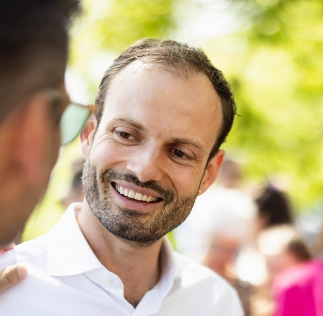

Moritz Mähr
Associate Researcher
![]()
Dr. sc. Moritz Mähr is an Associate Researcher in Digital Humanities at the University of Bern and the digital project manager of Stadt.Geschichte.Basel at the University of Basel. He studied history and philosophy of knowledge, computer science, and banking and finance in Zurich and Berlin. From 2018 to 2022, he was a research assistant at the Chair for the History of Technology at ETH Zurich. He wrote a dissertation on the digitization of migration authorities in Switzerland in the 1960s. The study was part of the SNSF-funded project Trading Zones. His research interests include science and technology studies, digital humanities, and the history of computing. He is an advocate of open science, open access and open source.
Science and Technology Studies, Digital History, Digital Humanities, Open Science, Open Access, Open Source

Curriculum Vitae
Dr. sc. Moritz Mähr
University of Bern
Walter Benjamin Kolleg
Digital Humanities
Muesmattstrasse 45
3012 Bern
Switzerland
ORCID 0000-0002-1367-1618
moritz.maehr@faculty.unibe.ch
* December 31, 1987, Swiss Citizen
Current positions and affiliations
University of Bern, Bern, CH
Associated Researcher, February 2023-Present
University of Basel, Basel, CH
Project Manager, October 2021-Present
Education
ETH Zurich, Zurich, CH
Dr. sc. ETH Zurich, History of Technology, 2022
ETH Zurich, Zurich, CH
Master of Arts, with honors, History and philosophy of knowledge, 2014
University of Zurich, Zurich, CH
Bachelor of Arts, magna cum laude, Banking and Finance, 2011
Former positions and affiliations
University of Bern, Bern, CH
IFN Postdoctoral Research Fellow, August 2022-January 2023
Chair for History of Technology & Collegium Helveticum, ETH Zurich, Zurich, CH
Research assistant, February 2018-April 2022
Department of Informatics, University of Zurich, Zurich, CH
Tutor and teaching assistant, 2008-2009
Grants and Fellowships
SNSF Open Access Books, Wie der Verwaltungscomputer die Arbeitsmigration programmierte: Elektronische Datenverarbeitung in der Bundesverwaltung 1964–1982, 2024, https://data.snf.ch/grants/grant/221756.
IFN Postdoctoral Fellowship, University of Bern, 2022, https://www.ifn.unibe.ch/programs/personal_data/dr_sc_maehr_moritz/index_eng.html.
Teaching experience
Huber, Rachel, and Moritz Mähr. 2025. “Decoding Inequality: Kritische Perspektiven auf Machine Learning und gesellschaftliche Ungleichheit.” Kolloquium, University of Bern. https://dhbern.github.io/decoding-inequality-2025/.
Mähr, Moritz. 2024a. “How to Organize Your Research (Digitally).” Lecture presented at the DH Lab (fall semester 2024), University of Bern, April 16.
Mähr, Moritz. 2024b. “Mit ChatGPT Texte schreiben: Prompting-Methoden für Historiker:innen.” Seminar Session presented at the Geschichte schreiben mit künstlicher Intelligenz (600k506a), University of Zurich, March 8. https://doi.org/10.5281/zenodo.10815218.
Mähr, Moritz. 2022a. “The Corpus as a Network. Turning Source Documents into a Graph with NLP.” Lecture presented at the Lecture series Einblicke in die Digital Humanities (fall semester 2022), University of Bern, December 12. https://doi.org/10.5281/zenodo.7430555.
Mähr, Moritz. 2022b. “The Automation of Migration Policy in Switzerland in the 1960s.” Seminar Session presented at the Interdisciplinary Seminar on Migration and Mobility, ETH Zurich, March 25. https://doi.org/10.3929/ETHZ-B-000538201.
Mähr, Moritz. 2020. “Review (Sitzung 11).” Seminar Session presented at the Schreibübung (600-009a), University of Zurich, May 5. https://doi.org/10.3929/ethz-b-000413518.
Mähr, Moritz. 2019a. “Knoten & Kanten. Einführung in die Analyse sozialer Netzwerke.” Seminar Session presented at the Digital Masterclass at Bauhaus-Universität Weimar, Bauhaus-Universität Weimar, February 8.
Mähr, Moritz. 2019b. “E-Mail wird 36 Jahre alt. Zeit für eine Quellenkritik.” Lecture presented at the Digital Masterclass, Bauhaus-Universität Weimar, February 7. https://doi.org/10.3929/ethz-b-000324252.
Supervision
Guyot, Nina, 2021. “inhabiting zurich”, MA thesis, ETH Zurich, supervisor Alexandre Theriot, co-supervisor Moritz Mähr.
Organisation of conferences, workshops and panels
Baudry, Jérôme, Lucas Burkart, Béatrice Joyeux-Prunel, Eliane Kurmann, Moritz Mähr, Enrico Natale, Christiane Sibille, and Moritz Twente. 2024. “Digital History Switzerland 2024.” International Conference, University of Basel, September 12. https://digihistch24.github.io/book-of-abstracts/.
Amsler, Claudia, Vlad Atanasiu, Jan Baumann, Alexandre Camus, André Cardozo Sarli, Vera Chiquet, Tobias Hodel, Moritz Mähr, Charlotte Mazel-Cabasse, Enrico Natale, Jessica Pidoux, and Mylène Tanferri Machado. 2021. “Critique Digitale.” Unconference, Online, October 21. https://critique-digitale.ch/.
Krauer, Philipp, Moritz Mähr, and Nick Schwery. 2019. “Digitale Werkzeuge in der Quellenarbeit.” Workshop, Collegium Helveticum, February 14. https://www.tg.ethz.ch/fileadmin/redaktion/dokumente/Personen_pdfs/Digitale_Werkzeuge_in_der_Quellenarbeit_def.pdf.
Leins, Stefan, and Moritz Mähr. 2015. “Das Wissen der Finanzmärkte.” Workshop, Center for History of Knowledge of ETH Zurich and University of Zurich, March 16. https://www.zgw.ethz.ch/fileadmin/ZGW/veranstaltungen/2015/Wissen_der_Finanzm%C3%A4rkte_ifw.pdf.
Service and affiliations
Member of the Advisory Board of OpenData.ch
Founding member of Digital History Network Switzerland
Member of DHd
Member of Digitale Gesellschaft
Member of Geschichte & Informatik Schweiz
Member of SGG
Member of SSHOC-CH
Member of VSA-AAS
Reviewer for ADHO, DHd, DHTech, JOHD, SZG
Languages
German, Native
English, Advanced (C1)
Cambridge English Level 2 Certificate in ESOL International (Advanced)
Spanish, Advanced (C1)
Universidad Nacional de Córdoba, CELU Intermedio c. m. excelente
Language Center of the University of Zurich and ETH Zurich C1
French, Intermediate (B2)
Qualification in higher education didactics
Teaching scientific writing skills (2019)
Optimize my performance with voice and presentation technique (2021)
Publications
Monographs
Mähr, Moritz. 2024. Wie der Verwaltungscomputer die Arbeitsmigration programmierte: Elektronische Datenverarbeitung in der Schweizer Bundesverwaltung 1964–1982. Edited by Klaus Gestwa, Martina Heßler, Dirk van Laak, and Helmuth Trischler. Vol. 17. Geschichte der technischen Kultur. Paderborn: Brill Schöningh. https://doi.org/10.30965/9783657796823.
Articles in peer-reviewed journals and edited volumes
Mähr, Moritz. 2024. “Die Geschichte von Basel ins Netz stellen: Beteiligung relevanter Anspruchsgruppen an der Entwicklung eines nachhaltigen und offenen Public-History-Portals.” In Zusammenarbeit klug gestalten: Projektmanagement und Digital Humanities, edited by Fabian Cremer, Swantje Dogunke, Anna Maria Neubert, and Thorsten Wübbena. Digital Humanities Research 9. Bielefeld: Bielefeld University Press. https://www.transcript-open.de/doi/10.14361/9783839469675-007.
Diekjobst, Anne, Tim Geelhaar, Tobias Hodel, Moritz Mähr, and Melanie Seltmann. 2024. “Mit Standards forschen und Handlungsräume schaffen.” In Living Handbook “Digitale Quellenkritik,” edited by Aline Deicke, Jonathan G. Geiger, Marina Lemaire, and Stefan Schmunk. https://doi.org/10.5281/zenodo.12656766.
Mähr, Moritz. 2022. “The Promise of an Automated Migration Policy: On Planning an Information System in the Swiss Federal Administration in the 1960s.” In Digital Federalism Information, Institutions, Infrastructures (1950–2000), edited by Paolo Bory and Daniela Zetti, 60–89. Itinera. Beihefte Zur Schweizerischen Zeitschrift Für Geschichte 49. Basel: Schwabe. https://doi.org/10.24894/978-3-7965-4509-2.
Espahangizi, Kijan, and Moritz Mähr. 2020. “The Making of a Swiss Migration Regime. Electronic Data Infrastructures and Statistics in the Federal Administration, 1960s–1990s.” Journal of Migration History 6 (3): 379–404. https://doi.org/10.1163/23519924-00603005.
Mähr, Moritz, and Kijan Espahangizi. 2020. “Computing Aliens. From Central Control to Migration Scenarios, 1960-1990.” In Data Centers. Edges of a Wired Nation., edited by Monika Dommann, Hannes Rickli, and Max Stadler, 226–41. Zurich: Lars Müller Publishers.
Mähr, Moritz. 2020a. “Working with Batches of PDF Files.” Programming Historian 9. https://doi.org/10.46430/phen0088.
Mähr, Moritz. 2020b. “CTRL + F. Eine Suchmaschine für die Quellenarbeit bauen.” etü, no. II: 88–91. https://doi.org/10.3929/ethz-b-000449830.
Federer, Lucas, and Moritz Mähr. 2020. “Bewegte Quellen festhalten. Wie wird in Zukunft auf digital verfügbare audiovisuelle Quellen verwiesen?” Text/html,application/pdf. Traverse 27 (3): 159–66. https://doi.org/10.5169/seals-914091.
Mähr, Moritz. 2012. “Blaupause einer flexiblen Lebensform.” In In Ordnung, 88–91. Trans 21. Zürich: gta Verlag. https://www.e-periodica.ch/digbib/view?pid=trn-001:2012:0::503.
Conference presentations, invited talks, keynotes and workshops
Mähr, Moritz. 2025. “The Basel Keyword Apocalypse: ChatGPT’s Misguided Quest for Historical Order.” Contributed Lightning Talk presented at the Analysing sources after the ChatGPT shock. How large language models process medieval and born-digital sources., Sozialarchiv Zürich, March 12.
Mähr, Moritz. 2024a. “Digitale Sammlungen mit FAIR-Daten und Open Source Software erstellen: Eine Einführung in CollectionBuilder.” Invited Talk presented at the Coffee Lectures, University of Bern, December 3. https://doi.org/10.5281/zenodo.14267948.
Kolb, Lucie, Linda Ludwig, Moritz Mähr, and Iolanda Pensa. 2024. “FAIR and CARE: Challenges and Opportunities.” Round table presented at the DARIAH-CH Study Day, HGK Basel, November 22. https://www.dariah.ch/study-day-2024.
Mähr, Moritz. 2024b. “Uncovering Hidden Connections: Exploring History with Social Network Analysis.” Invited Talk presented at the DH Methods & Tools, University of Zurich, November 13. https://doi.org/10.48620/76223.
Görlich, Nico, Moritz Mähr, Moritz Twente, and Cristina Wildisen-Münch. 2024. “Accessible Public History: Digitale Sammlungen mit CollectionBuilder selbst erstellen.” Contributed Workshop presented at the Praxislabor at Historikertag 2024, online, October 15. https://doi.org/10.58079/11sc7.
Görlich, Nico, Moritz Mähr, Noëlle Schnegg, and Moritz Twente. 2024. “Accessible Public History: digitale Sammlungen mit CollectionBuilder selbst erstellen.” Contributed Workshop presented at the Digital History und Citizen Science 2024, University of Halle, September 21. https://www.conftool.org/digital-humanities-citizen-science-2024/index.php?page=browseSessions&form_session=74.
Mähr, Moritz. 2024c. “Fast Prototyping: CollectionBuilder’s Minimal Computing Approach to Open-Source Collections and Exhibits.” Contributed Lighting Talk presented at the RSE Meetup, ETH Zurich, June 4. https://doi.org/10.5281/zenodo.11190199.
Mähr, Moritz. 2024d. “Mit ChatGPT Texte schreiben: Prompting-Methoden für Historiker:innen.” Invited Workshop presented at the Dozierenden-Workshop des historischen Seminars, University of Zurich, March 15. https://zenodo.org/doi/10.5281/zenodo.10815356.
Mähr, Moritz. 2024e. “Werkstattbericht: Das neue Portal der Stadtgeschichte.” Invited Talk presented at the Vortragszyklus der Historisch Antiquarischen Gesellschaft Basel (HAG), Naturhistorisches Museum Basel, March 4. https://doi.org/10.5281/zenodo.10780215.
Mähr, Moritz. 2024f. “Die Geschichte von Basel ins Netz stellen: Mit Forschungsdaten Public History schreiben.” Contributed Presentation presented at the Doing Digital Public History, Zentralbibliothek Zürich, February 2. https://doi.org/10.5281/zenodo.10602603.
Mähr, Moritz. 2023a. “Digital Longevity: Learnings from the (Digital) History Project Stadt.Geschichte.Basel.” Invited Talk presented at the Legal History Meets Digital Humanities, Max Planck Institute for Legal History and Legal Theory, December 12. https://doi.org/10.5281/zenodo.10368874.
Mähr, Moritz. 2023b. “Accessible Public History: CollectionBuilder’s Minimalist Approach to Open-Source Collections and Exhibits.” Invited Infrastructure pitch presented at the DARIAH-CH Study Day, University of Bern, October 20. https://doi.org/10.5281/zenodo.10003519.
Mähr, Moritz. 2023c. “The Reconstruction of the Central Aliens Register: Early Database Systems in the Swiss Federal Administration as a Subject of Historical Research.” Contributed Presentation presented at the Database Histories – Histories of Databasing and Databasing of History, University of Basel, June 23. https://www.hsozkult.de/event/id/event-136204.
Mähr, Moritz. 2023d. “Research Data Management and Public History.” Invited Talk presented at the RISE (Internal Lecture Series), University of Basel, June 21. https://doi.org/10.5281/zenodo.11106921.
Mähr, Moritz. 2023e. “Literature Research with ChatGPT: Excerpting and Summarizing for the Impatient Researcher.” Invited Talk presented at the Interaktive Sprachmodelle: Lehre und Forschung mit ChatGPT & Co, University of Bern, April 21. https://doi.org/10.48350/181897.
Kury, Patrick, and Moritz Mähr. 2023. “New urban history am Beispiel von Basel - analog und digital.” Invited Talk presented at the Forschungskolloquium des Historischen Seminars, University of Lucerne, April 18. https://www.unilu.ch/fakultaeten/ksf/institute/historisches-seminar/veranstaltungen/new-urban-history-am-beispiel-von-basel-analog-und-digital-7302/.
Mähr, Moritz. 2023f. “Die Entwicklung der Internet Governance: Wie kann ein grosses Korpus an digital entstandenen Quellen in einem kollaborativen Forschungsprojekt untersucht werden?” Invited Talk presented at the Forschungskolloquium zur Geschichte nach 1800, University of Bern, March 1. http://doi.org/10.48350/179388.
Wildisen-Münch, Cristina, Nico Görlich, and Moritz Mähr. 2022. “Teach Historians How to Design a Data Story: Stadt.Geschichte.Basel.” Contributed Poster Slam presented at the DARIAH-CH Study Day, Università della Svizzera Italiana (USI), Mendrisio, Switzerland, October 20. https://doi.org/10.5281/zenodo.7198056.
Mähr, Moritz. 2022a. “Wer entscheidet darüber, wie das Internet funktioniert?” Invited Talk presented at the 8. Tag der Junior Fellows, Walter Benjamin Kolleg der Universität Bern, October 1. https://doi.org/10.48350/173623.
Mähr, Moritz. 2022b. “Research Data Management in (Public) History.” Key note presented at the Digital Humanities Methodologies DHCH 2022, Istituto Svizzero di Roma, June 15. https://doi.org/10.5281/zenodo.6637118.
Mähr, Moritz. 2022c. “Wie der Verwaltungscomputer die Arbeitsmigration programmierte. Elektronische Datenverarbeitung in der Bundesverwaltung 1964–1982.” Invited Talk presented at the Oberseminar Sommersemester 2022, Deutsches Museum, May 30. https://doi.org/10.3929/ethz-b-000549787.
Mähr, Moritz. 2022d. “Wie der Verwaltungscomputer die Arbeitsmigration programmierte: Elektronische Datenverarbeitung in der Bundesverwaltung 1964–1982.” Defense, ETH Zurich, April 25. https://www.research-collection.ethz.ch/handle/20.500.11850/587764.
Mähr, Moritz. 2021a. “The Public, the Private, and the Domestication of the Information System. How Data Protection Governed the Swiss Administration in the 1970s.” Contributed Presentation presented at the 6th International Conference on the History and Philosophy of Computing, Zurich, October 27. https://doi.org/10.3929/ethz-b-000512153.
Mähr, Moritz. 2021b. “Arbeiten mit (vielen) retrodigitialisierten Quellen: Texterkennung und Metadatenextraktion in PDF-Dateien mit freier Software.” Contributed Workshop presented at the Praxislabor at Historikertag 2021, online, July 13.
Mähr, Moritz, Henrike Hoffmann, and Daniela Zetti. 2019. “How the Search Engine Came to the Historians.” Contributed Presentation presented at the Sharing the Experience: Workflows for the Digital Humanities (DARIAH-DESIR Workshop), University of Neuchâtel, December 6. https://doi.org/10.3929/ethz-b-000384360.
Mähr, Moritz. 2019a. “Auf Magnetband gespeicherte Ausländer. Steuerung der Arbeitsmigration in der Schweiz nach 1960.” Invited Talk presented at the Forschungskolloquiums zur Geschichte der vormodernen und modernen Welt, Universität of Lucerne, July 5. https://doi.org/10.3929/ethz-b-000390398.
Mähr, Moritz. 2019b. “Auf Magnetband gespeicherte Ausländer. Steuerung der Arbeitsmigration zur Sicherung des Wohlstands nach 1960.” Contributed Presentation presented at the Panel “Wie wird der Zusammenhang von Reichtum, Arbeit und Migration in der Schweiz in neueren Publikationen und Projekten thematisiert?” (5. Schweizerischen Geschichtstage), University of Zurich, June 6. https://doi.org/10.3929/ethz-b-000347897.
Mähr, Moritz. 2019c. “Netzwerke als Suchstrategie.” Invited Talk presented at the Workshop “Digitale Werkzeuge in der Quellenarbeit,” Collegium Helveticum Zurich, February 14.
Mähr, Moritz. 2018a. “E-Mail wird 36 Jahre alt. Zeit für eine Quellenkritik.” Invited Talk presented at the Research Network “Computer, administration, and history,” IKKM Weimar, December 4.
Mähr, Moritz. 2018b. “Die Fremden und der Computer: Die Entstehung des zentralen Ausländerregisters in den 1970er und 1980er Jahren.” Invited Talk presented at the Migration and Postcoloniality Meet Switzerland Workshop of University of Fribourg, Centre Loewenberg Murten, October 26.
Mähr, Moritz. 2015. “Heldengeschichten und Feldforschung: Ein kritischer Blick auf die Social Studies of Finance.” Invited Talk presented at the Das Wissen der Finanzmärkte (ZGW Workshop), ETH Zurich, March 16. https://web.archive.org/web/20191216201059/https://voicerepublic.com/talks/heldengeschichten-und-feldforschung.
Posters
Wildisen-Münch, Cristina, Nico Görlich, Moritz Mähr, and Moritz Twente. 2023. “Karten als ‘boundary objects’ oder wie man mit Geodaten historische Thesen bildet.” Presented at the Digital History Tagung 2023 Humboldt-Universität zu Berlin, Berlin, May 23. https://doi.org/10.5281/zenodo.7960745.
Wildisen-Münch, Cristina, Nico Görlich, and Moritz Mähr. 2022. “How to Tell a Data Story.” Poster presented at the DARIAH-CH Study Day, Università della Svizzera Italiana (USI), Mendrisio, Switzerland, October 20. https://doi.org/10.5281/zenodo.7193613.
Mähr, Moritz, Henrike Hoffmann, and Daniela Zetti. 2018. “Topic Modelling and Explorative Search.” Poster presented at the DARIAH CH Workshop at University of Neuchâtel, Neuchâtel, November 29. https://doi.org/10.3929/ethz-b-000311816.
Mähr, Moritz. 2018a. “Typademic, Collaborative Academic Publishing.” Poster presented at the DARIAH CH Workshop at University of Neuchâtel, Neuchâtel, November 29. https://doi.org/10.3929/ethz-b-000311815.
Mähr, Moritz. 2018b. “Topic modelling & explorative Suche.” Poster presented at the DARIAH DE Grand Tour at TU Darmstadt, Darmstadt, September 20. https://doi.org/10.3929/ethz-b-000311814.
Varia
Mähr, Moritz, and Noëlle Schnegg. 2024. Handbuch zur Erstellung diskriminierungsfreier Metadaten für historische Quellen und Forschungsdaten. Basel: Zenodo. https://doi.org/10.5281/zenodo.11124720.
Mähr, Moritz. 2024. Q&A with Moritz Mähr, Stadt.Geschichte.Basel and cb-translate Interview by Julia Stone. Blog. https://collectionbuilder.github.io/2024-04-22-cb-moritz-mahr/.
Gabay, Simon, Tobias Hodel, Moritz Mähr, Stefan Nellen, Barbara Roth-Lochner, Pascale Sutter, Andrea Voellmin, and Karin von Wartburg. 2023. “Datenstandards für die historische Forschung – Ein White-Paper der Schweizerischen Gesellschaft für Geschichte.” White-Paper. Schweizerische Gesellschaft für Geschichte. https://doi.org/10.5281/zenodo.10122052.
Mähr, Moritz. 2023. “Embracing Endings: Principles for Digital Longevity and Their Importance for Research Software Engineers.” Blog. DHTech. August 7, 2023. https://dh-tech.github.io/blog/2023-08-07-ending-principles/.
Wildisen-Münch, Cristina, Nico Görlich, and Moritz Mähr. 2022. “Das Kontrollbüro und die Wundermaschine: Wie Basel-Stadt in den 1960er Jahren das Einwohnermeldewesen digitalisierte.” Data Story. ArcGIS StoryMaps. June 7, 2022. https://storymaps.arcgis.com/stories/6be823309a7b4254aa27b5486703b68b.
Mähr, Moritz, Malte Vogl, Diego Siqueira, Carsten Thiel, Julia Damerow, David Maus, Stefan E. Funk, and Jan Oliver Rüdiger. (2017) 2021. “Awesome Digital Humanities.” 2021. https://dh-tech.github.io/awesome-digital-humanities.
Mähr, Moritz. 2020. “Sofia Booz, Der Reißwolf. Aktenvernichtung als destruktiver, ordnender und produktiver Umgang mit Daten (1965-2015).” TG 87 (3): 265–66. https://doi.org/10.5771/0040-117X-2020-3.
Mähr, Moritz, Henrike Hoffmann, Markus Wolfenswan, Rida Ayed, Wincent Balin, and Kieran Robson. 2019. “Awesome Digital History.” Linklist. Awesome Digital History. September 21, 2019. https://maehr.github.io/awesome-digital-history/.
Vishnu, Ashwin, and Moritz Mähr. 2018. “Awesome Scientific Writing.” Awesome Scientific Writing. May 9, 2018. https://writing-resources.github.io/awesome-scientific-writing/.
Mähr, Moritz, Matias Mikhail, and Andri Tschudi. 2014. “Tagungsbericht: Das Politische in der Wissensgeschichte – Perspektiven eines Forschungskonzepts, 10.04.2014 – 12.04.2014 Zürich.” H-Soz-Kult. http://www.hsozkult.de/conferencereport/id/tagungsberichte-5437.
Thesis
Mähr, Moritz. 2022. “Wie der Verwaltungscomputer die Arbeitsmigration programmierte: Elektronische Datenverarbeitung in der Bundesverwaltung 1964–1982.” Doctoral Thesis, ETH Zurich. https://doi.org/10.3929/ethz-b-000587758.
Mähr, Moritz. 2014. “Wie die Demokratie zu ihrem Wissen kommt: Über demokratisch adäquate, epistemische Mechanismen.” Master thesis, Zurich: ETH Zurich. https://doi.org/10.3929/ethz-b-000311817.
Mähr, Moritz. 2011. “Wer entscheidet in der Schweiz de jure und de facto über Systemrelevanz?” Bachelor thesis, Zurich: University of Zurich. https://doi.org/10.13140/RG.2.1.2270.6082.
Software
Mähr, Moritz, Nico Görlich, and Moritz Twente. (2023) 2024. “Stadt.Geschichte.Basel Research Data Platform.” https://github.com/Stadt-Geschichte-Basel/forschung.stadtgeschichtebasel.ch.
Mähr, Moritz. 2023. “Maehr/Open-Research-Data-Template.” https://github.com/maehr/open-research-data-template.
Mähr, Moritz, Nico Görlich, Sebastian Flick, Adrian Demleitner, and Aline Mähr. 2023. “Stadt-Geschichte-Basel/Stadtgeschichtebasel.Ch.” Svelte. Stadt.Geschichte.Basel. https://github.com/Stadt-Geschichte-Basel/stadtgeschichtebasel.ch.
Mähr, Moritz. 2021. “Maehr/Academic-Pandoc-Template.” https://zenodo.org/record/5749967.
Mähr, Moritz, Tobias Hodel, and Vlad Atanasiu. (2021) 2021. “Critique-Digitale.Ch.” Svelte. https://github.com/critique-digitale/critique-digitale.ch.
Mähr, Moritz. 2020a. “Maehr/Uzh-Ma-Thesis.” https://zenodo.org/record/4270126.
Mähr, Moritz. 2020b. “Maehr/Typademic.” https://zenodo.org/record/4153183.
Mähr, Aline, and Moritz Mähr. 2020. “Open-Museum/Web.” https://github.com/open-museum/web.
Mähr, Moritz. 2020c. “Open-Museum/Open-Museum.Ch.” Svelte. https://github.com/open-museum/open-museum.ch.
Mähr, Moritz. 2019. “Maehr/Github-Template.” https://github.com/maehr/github-template.
Datasets
Mähr, Moritz. 2019. “International Labour Office Historical Studies and Reports English.” Zenodo. https://doi.org/10.5281/zenodo.3582818.